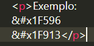

Parágrafos
A tag parágrafo serve para você poder escrever dentro da tag <p> e </p>.
Exemplo:

Quebras de linha
Se precisar quebrar a linha (ir para a próxima) em algum lugar específico como esse,
você pode usar a tag <br></br> (break roll).
Exemplo:

Divisórias de página
Para usarmos uma divisória de página usamos a tag <hr> uma única vez.
Exemplo:

Divisórias de conteúdo
As divisórias de conteúdo são feitas pela tag <div></div> consiste em dividir semânticamente o conteúdo para ficar de fácil leitura depois.
Exemplo: 
Span
É como se fosse uma div que pode ser inserida no meio do conteúdo sem precisar pular linha.
Exemplo:
Diferença entre div e span

Como mostrado anteriormente, a diferença entre div e span é que a div ela é usada para dividir bloco e o span para dividir parte da linha.
Direitos autorais
Podemos usar também simbologia autorais como: ® © ™ £ ¥ ¢ Δ
Um exemplo de link para simbologias autorais.
Colocando emojis
Podemos também utilizar emojis no site.
Exemplo: 🖖 🤓
Alguns exemplos de emoji também se encontram neste link.